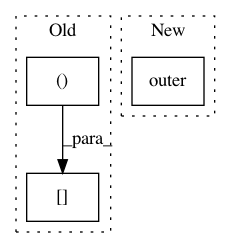

3e2274441c92ebafcdbb6d0cf3cc934b6d87602d,lxmls/deep_learning/rnn.py,NumpyRNN,grads,#NumpyRNN#Any#Any#,125
Before Change
// backprop through nonlinearity.
dh_raw = self.derivate_activation(h[:, t+1], self.activation_function) * e_h
nabla_W_h += dh_raw[:,None].dot(h[:, t][None,:])
nabla_W_x += dh_raw[:,None].dot(z[:, t][None,:])
After Change
// Weight gradients
nabla_W_y += np.outer(e[:, t], h[:, t+1])
nabla_W_h += np.outer(e_raw, h[:, t])
nabla_W_x += np.outer(e_raw, z[:, t])
nabla_W_e[:, x[t]] += W_x.T.dot(e_raw)
// Normalize to be in agreement with the loss
In pattern: SUPERPATTERN
Frequency: 4
Non-data size: 3
Instances
Project Name: LxMLS/lxmls-toolkit
Commit Name: 3e2274441c92ebafcdbb6d0cf3cc934b6d87602d
Time: 2016-06-19
Author: ramon@astudillo.com
File Name: lxmls/deep_learning/rnn.py
Class Name: NumpyRNN
Method Name: grads
Project Name: deepchem/deepchem
Commit Name: 624dfb1a1263e5539d30112e2ba7344957b9b20f
Time: 2020-07-20
Author: peastman@stanford.edu
File Name: deepchem/feat/coulomb_matrices.py
Class Name: CoulombMatrix
Method Name: coulomb_matrix
Project Name: EducationalTestingService/skll
Commit Name: a776c30409e35b42c686ec434132378f302e97bb
Time: 2013-08-18
Author: dblanchard@ets.org
File Name: skll/metrics.py
Class Name:
Method Name: kappa
Project Name: librosa/librosa
Commit Name: 8a35afbdb757e3925824f71288098a62f222a405
Time: 2014-06-25
Author: brm2132@columbia.edu
File Name: librosa/filters.py
Class Name:
Method Name: chroma